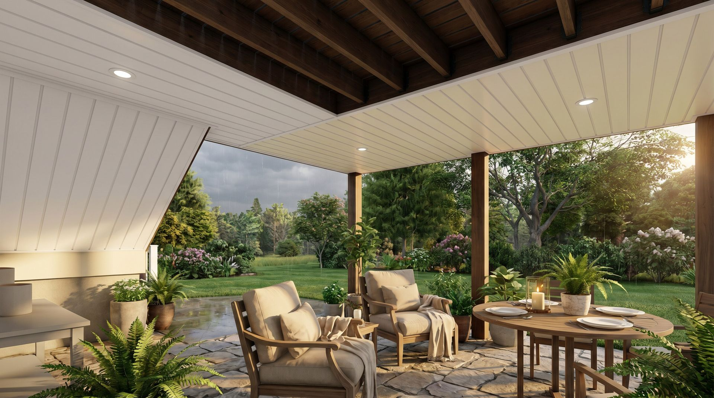
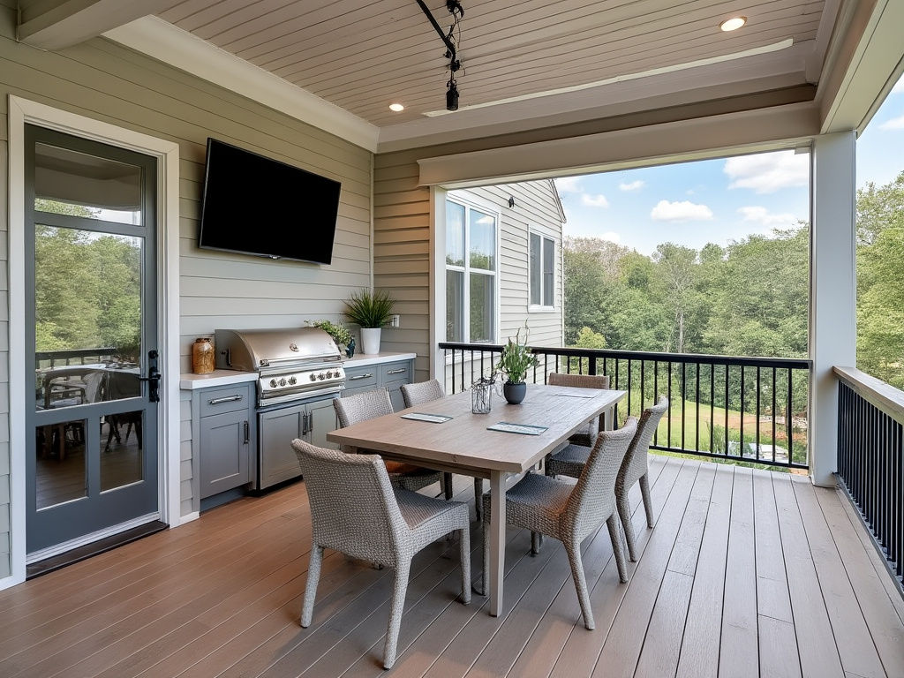
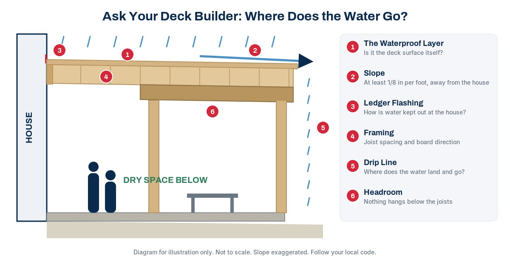
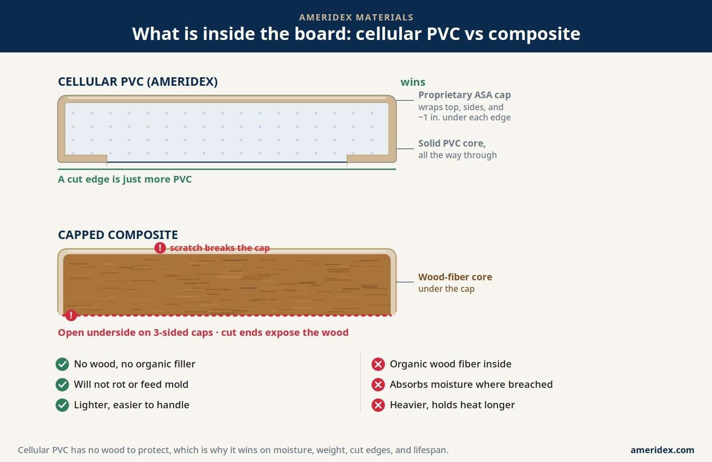
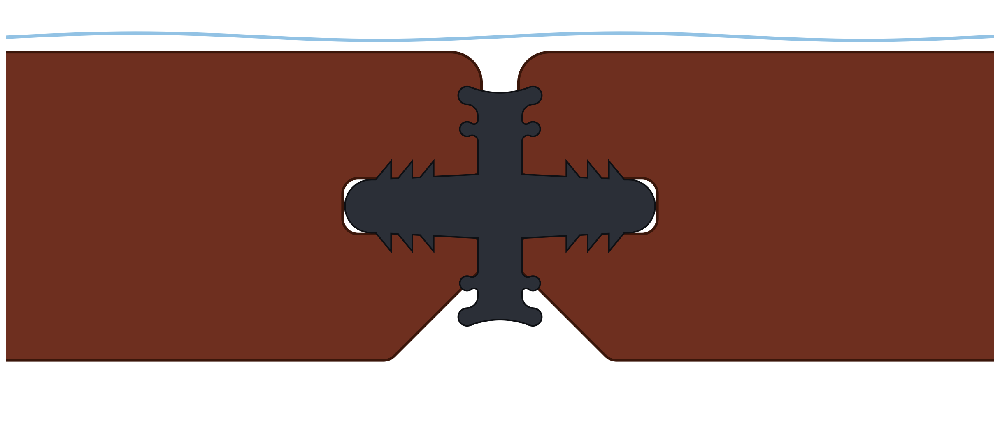

PVC decking + integrated drainage
Beautiful decking above.
More living below.
PVC deck boards lock onto the black Dexerdry seal. Rain runs off the top, so the space below stays dry.
For new decks, and re-decks on sound framing with the right pitch.

For contractors
Contractors: design decks and give homeowners instant pricing.
Made in the USAAmerican-made decking
7 colors + TrueGrainStandard and premium finishes
Start with your goal
What are you trying to do?
Pick one. We will point you to the next step.
Keep the patio under my deck dry
Dry space decking HomeownersPlan a new deck
Open the planning checklist HomeownersReplace the boards on an old deck
Re-decking with AmeriDex HomeownersStop an upper deck from dripping
Second-story deck guide Builders and contractorsI build decks for a living
Contractor resources Lumberyards and dealersI want to sell AmeriDex
Become a dealerNot sure? Call 800-217-9206 or send us a message.
How the system works
The difference is
between the boards.
Rain runs off the top. The space below stays dry. See waterproof decking.
A cellular PVC deck surface
Seven standard colors, plus the TrueGrain Premium Collection. No staining.
A seal between the boards
The black Dexerdry seal closes every gap.
A planned path for rain
1/8 inch per foot of slope, away from the house.
Stock lengths
12, 16 and 20 ft. Custom up to 25 ft.
Built to drain
Pitch away from the house.
Face screwed
Starborn screws, color-matched plugs.
Limited warranty
Follow current installation instructions. Open sides can still let in wind-driven rain.

Think beyond the deck
Your favorite room
might be outside.
Plan the space underneath first. Then the deck above it.
Explore outdoor living inspirationDesign inspiration from the AmeriDex gallery.
Make it yours
Find your kind of beautiful.
Seven standard colors. One easy first step.
Select a board to explore its texture.
The premium upgrade
TrueGrain Premium
Collection.
Our top of the line AmeriDex boards.
An ultra-realistic wood look, built to outlast wood.
- Looks like real woodUltra-realistic grain and tone, up close and from the yard.
- Built to outlast woodNo rot and no refinishing, season after season.
- Dry below, tooThe same AmeriDex system keeps the space under your deck dry.
See what makes TrueGrain different
The look of exotic hardwood, with more value over the life of your deck: no rot, no refinishing, and a dry space below.
Ask your dealer or request a quote for TrueGrain pricing.Good projects start with good information
The AmeriDex
Learning Center.
Materials, the system, and ideas for your deck.

Newest Article Planning
10 Questions to Ask Your Deck Builder About a Dry Space Below
Slope, ledger flashing, board direction, where the water lands, and the warranty. A checklist to bring to your builder before the boards go down.
Read the article
Materials explained
PVC or composite?
Start at the core.
Explore the materials 
The connection that matters
Get to know
the Dexerdry seal.
See how it connects PLANNING GUIDE
From idea to a better plan
Before you build,
start here.
Open the planning checklist Looking for professional resources?
Visit the contractor resource hubFrom idea to outdoor living
A clearer path to your project.
The people behind the boards
Made in New Jersey by people who build.
Carpenter John Ardolina built the Dexerdry seal to stop water at the deck surface. Co-founder Jim Murphy runs manufacturing.
Boards made in Linden, NJ. Team in Brick, NJ. You reach us directly.
Meet the team behind AmeriDex- Call us1-800-217-9206Mon-Fri, 8am-5pm ET
- Email ussales@ameridex.comWe reply within 1-2 business days
- Find us1129A Industrial Parkway
Brick, NJ 08724
Before you build
Good questions.
Clear answers.
Start here, then review the details with your builder.
See system details Installing Dexerdry? Get instant answers.Type an installation question and get an answer right away.Open install helpAbout AmeriDex
Can I use AmeriDex on an existing deck?
Yes, on a re-deck on sound framing that already has the right pitch where the old boards are removed. Your builder must confirm framing condition, spacing, pitch, flashing, fastening, and the current installation requirements. It cannot be added beneath boards that stay in place.
Does it keep all rain out of the space below?
No system can promise that for an open-sided space. The correctly installed board-and-seal assembly sheds rain off the deck surface, so the area underneath stays much drier and usable. Wind-driven rain can still blow in from the open sides, and perimeter details matter. It is not a fully enclosed, weatherproof room.
How is it different from under-deck drainage?
AmeriDex integrates the drainage function at the deck surface. Other systems use a separate above-joist layer beneath the boards or collect water below the joists. Compare the three approaches to match the system to your project.
Is AmeriDex waterproof decking?
Yes, at the deck surface. The Dexerdry seal closes the gap between the boards, so a correctly installed deck sheds rain off the surface instead of letting it drip through. The area underneath stays much drier and usable, but it is open-sided, so wind-driven rain can still blow in from the sides. It is not a fully enclosed, weatherproof room. See how waterproof decking compares to membranes, aluminum planks, and coatings.
AmeriDex PVC Decking
Boards and colors
What are AmeriDex deck boards made of?
AmeriDex boards are cellular PVC with a proprietary ASA cap and a wood-grain finish. There is no wood fiber anywhere in the board, so a cut edge is just more PVC, with nothing to rot, swell or feed mold. The boards are made in Linden, New Jersey.
What colors are available, and which are solid?
There are seven standard colors, plus the TrueGrain Premium Collection. Driftwood, Khaki and Slate are solid colors. Beachwood, Chestnut, Redwood and Hazelnut are variegated, with streaks that add depth and help hide pollen and leaf marks between cleanings. The TrueGrain Premium Collection is the top of the line upgrade, with an ultra-realistic wood look in six colors: New England Birch, Coastal Driftwood, Aged Oak, Embered Taupe, Royal IPE and Tropical Walnut. Screen colors vary, so order free samples to see them in your own light.
What lengths do the boards come in?
AmeriDex boards are stocked in 12, 16 and 20 foot lengths. Standard runs top out at 20 ft, and custom lengths up to 25 ft are available on request.
What is the difference between grooved and solid edge boards?
Grooved boards have a groove along each side, and the Dexerdry seal locks into it. That is what closes the gap so rain sheds off the surface. Solid edge (square edge) boards have no side groove. You rout a groove only where the seal needs to fit, so they are used at starts, edges, corners and trim.
Can I get a picture frame border or a breaker board?
Yes, both are done with solid edge boards.
- Picture frame: the Dexerdry picture frame detail uses 1 1/2 inch strips ripped from a deck board. A 1/8 inch drainage gap stays between the board ends and the frame, so you get the framed look while water still runs off the deck. A full picture frame is not used, because perimeter boards capping the board ends would dam the water.
- Breaker: on decks wider than 20 ft, a solid edge center board (also called a butt board) splits the deck, with a gutter on each side.
It is an optional design choice; your builder will lay out the details.
Layout and framing
How much do AmeriDex boards expand and contract?
AmeriDex boards move about 1/8 inch over a 20 ft board across normal seasonal temperature swings. The movement is lengthwise only, along the length of the board, not side to side.
What gap should I leave at butt joints?
Butt joints happen only at a center or breaker board, never mid-run. Leave a 1/4 inch gap at butt joints.
Do the boards move side to side, and how are they spaced?
No. AmeriDex boards move only lengthwise, not side to side. The Dexerdry seal spaces the boards evenly, so no separate spacers are needed.
My deck is wider than 20 feet. How is that handled?
Treat it as smaller decks side by side. For example, a 32 ft deck becomes two 16 ft decks, split by a seam gutter (frame a 3 to 3 1/4 inch gap) or by a center board with a gutter on each side. Deck boards stop about 1/4 inch short of the gutter.
What joist spacing do AmeriDex boards need?
Frame the joists at 12 or 16 inches on center, never more than 16 inches on center.
Does the board direction have to run away from the house?
No. AmeriDex works with boards parallel or perpendicular to the house.
- Parallel decks start at a grooved frieze board at the wall. Your contractor supplies the frieze board; AmeriDex does not sell frieze, joists or stringers.
- Perpendicular decks start with a square edge board caulked to the ledger, with a gutter at the house.
Either way, the deck needs 1/8 inch per foot of pitch.
Fastening and tools
Can I use hidden fastener clips?
No. The Dexerdry seal sits in the side groove that clips would use. Boards are face screwed with Starborn top mount screws and capped with color-matched plugs, which gives a clean, hidden fastener look.
What screws and plugs should I use, and how many?
Use Starborn epoxy-coated or stainless steel screws with color-matched plugs, two screws per joist on every board. Work from the center of the deck outward, keeping each board compressed. Drive the heads flush, not buried, and put the plugs in as soon as you can, before rain or debris gets into the holes. Approved fasteners are part of the warranty terms, although the fasteners themselves are not warranted.
Do I need to pre-drill AmeriDex boards?
No. Cellular PVC does not need pre-drilling, while composite boards need a 3/16 inch pilot hole at every screw. This is one reason PVC goes in faster with the two-screw-per-joist pattern.
What tools do I need to cut and install AmeriDex?
You need:
- the BlueClaw compression tool and a 2x beater board
- a router with the matching bit
- a circular saw and a table saw (for drip edges)
- a rubber mallet
- a PVC pipe cutter for the seal
- a drill or impact driver
- a caulk gun with clear caulk
- safety glasses
A cut board needs no sealing, because a cut edge is just more PVC.
Performance and care
Do AmeriDex boards get hot in the sun?
Any deck surface warms in direct sun, and color matters most. Dark colors like Slate and Redwood absorb more heat and feel warmer underfoot in July. For a barefoot or pool deck, lean toward Driftwood, Khaki, Beachwood or Hazelnut, and leave a sample in the sun to test it.
Will the color fade?
The ASA cap on every board is designed to resist fading, but no material is fade-proof after years of sun. Boards may lighten a little as they weather, which is normal and not a defect. Under the limited warranty, the color will not fade more than 5 Delta E (CIE) units, a standard measure of color change, after exposure to light and weathering.
Do the boards need to be stained or sealed?
No. The color and protection are built into the ASA cap, so there is no sanding, staining, sealing or repainting. Putting a sealer or stain on the boards is unnecessary and could affect your warranty, so check your warranty documents first.
Will the boards stain from spills or leaves?
The boards are made to resist permanent staining from food and drink spills. Clean a spill with soap and water or a mild household cleaner as soon as you see it, and within one week. Rinse leaves off before they sit through a rain, and use an oxygen bleach solution for tannin marks. If a food or drink stain still will not come out, have a professional deck cleaner clean it at your cost; if it is still there after that, you can file a stain claim under the limited warranty within 30 days of the professional cleaning.
How do I clean the deck?
A broom and a garden hose take care of most days. For a deeper clean, use mild soap, warm water and a soft-bristle brush along the grain. Do not pressure wash: the stream can create micro-tears in the cap and disturb the seal. Avoid solvents, abrasive cleaners and chlorine bleach stronger than 3 percent.
Can mold or mildew grow on AmeriDex?
Mold cannot feed on PVC itself. It can grow on pollen, dirt or leaf debris left on the surface in shady, damp spots. Clean it off with 1 cup of oxygen bleach per gallon of warm water: let it sit 5 minutes, scrub lightly, then rinse.
How does PVC compare with composite and wood?
- Wood needs sealing every year or two and can rot.
- Composite blends wood fiber with plastic under a cap. That fiber can absorb water at cuts, scratches or uncapped faces.
- Cellular PVC has no wood fiber at all, so it does not swell, rot or feed mold, and it needs no pre-drilling.
PVC does move a bit more with temperature along its length.
Cost, warranty and buying
How much does AmeriDex cost?
AmeriDex is priced by the lineal foot of deck board, and that figure covers both the cellular PVC board and the Dexerdry seal, because together they are the drainage system. Use the cost guide calculator for a starting number, then ask for a written quote for exact figures.
Are the samples really free?
Yes. Pick the colors you want to see, choose a 6-inch or 12-inch sample, and we ship them to your door at no cost. Request your samples.
What warranty comes with it?
AmeriDex deck boards and accessories carry a 25-year limited residential warranty and a 10-year limited commercial warranty. It covers manufacturing defects that cause splitting, flaking, rotting or structural defects. Claims are prorated over the warranty term, the remedy is replacement of the defective product, and no claim can exceed the original purchase price. Read the warranty details and remember to register your warranty within 30 days.
How long will an AmeriDex deck last?
We do not publish a lifespan figure. What we put in writing is the limited warranty: 25 years on residential decks and 10 years on commercial decks, covering manufacturing defects that cause splitting, flaking, rotting or structural defects. Install the boards exactly as the instructions show, since improper installation voids the warranty.
What can void the warranty?
The limited warranty is void if the problem comes from improper installation; settling, distortion or collapse of the structure under the deck; abuse, such as shoveling snow or scraping with a metal shovel or other metal object; natural disasters such as floods, tornadoes, earthquakes or hurricanes; paints or other chemicals not recommended by the manufacturer; or extreme heat, including sunlight reflected from Low-E glass.
How do I make a warranty claim?
Mail your claim within 30 days of discovering the defect to A&M Building Products LLC (AmeriDex), 1129A Industrial Parkway, Brick, NJ 08724. Include proof of purchase showing the purchase date, a description of the problem and photos of the affected area. For questions, email sales@ameridex.com or call 1-800-217-9206. We may ask for more information or to inspect the deck. If the claim is valid, we replace the defective product.
Can I transfer the warranty to a new owner?
Yes, one time, within 5 years of the original purchase date. The original owner must send us a written request with proof of purchase and proof of the transfer within 60 days of selling the property or transferring the product. The new owner gets the rest of the original warranty term.
Where is AmeriDex made?
Our cellular PVC deck boards are manufactured in Linden, New Jersey, and the Dexerdry seal is also produced in the USA. Our headquarters, sales, and warehouse are in Brick, New Jersey.
Where should I start?
Request physical color samples, sketch your deck dimensions, and ask for a project quote. Your written quote should confirm boards, seals, fasteners, accessories, delivery, and any installation costs.
Your next chapter starts outside
Let’s make room for more.
Start with a color you love. Build a plan from there.
Real people, Mon-Fri, 8am-5pm ET. No obligation.